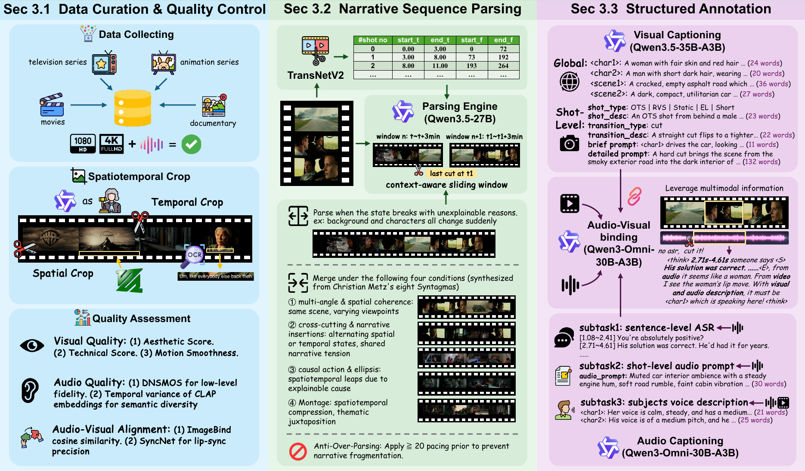
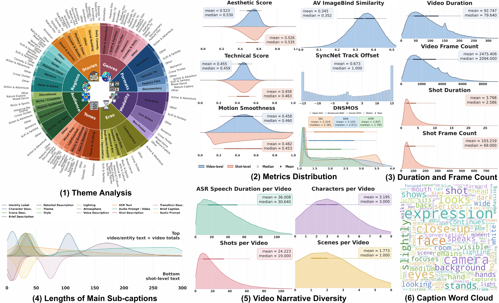
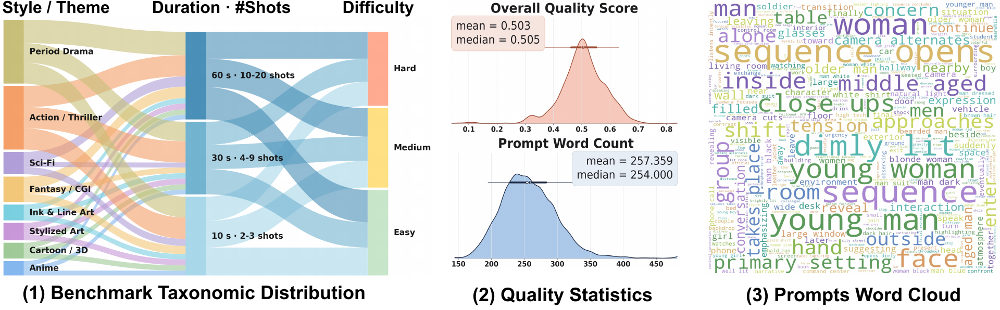

The fidelity and structural diversity of training datasets fundamentally determine the capabilities of video generation models. While commercial systems show remarkable ability to generate cinematic narratives, the progress of open-source models remains limited by the scarcity of high-quality training data.
To bridge this gap, we introduce CineDance-1M, a large-scale, open research Text-to-Audio-Video (T2AV) dataset designed specifically for multi-shot, long-form joint audio-video generation. Averaging 92.8 seconds and 24.2 continuous shots per video, it provides configurable, structured annotations for both audio and video modalities. This quality is achieved through a rigorous three-stage curation pipeline: (i) diverse sourcing and comprehensive cleansing, (ii) film-theory-inspired narrative parsing, and (iii) hierarchical dual-modal captioning.
For comprehensive assessment, we propose CineBench, featuring a diverse prompt suite and a six-dimensional, human-aligned metric system tailored for complex narrative audio-video evaluation. Furthermore, we adapt LTX-2.3 into CineDance, which demonstrates strong single-modality quality, precise audio-video alignment, and robust subject and environment consistency.
CineDance-1M targets the missing training unit for modern cinematic generation: not isolated short clips, but long audio-video sequences with consistent shot structure, aligned sound, and reusable annotations. The curation pipeline consists of three stages: data preparation and quality assessment, bottom-up multi-shot narrative parsing, and configurable structured dual-modal annotation.

CineDance-1M is the only 1M-scale dataset in this comparison with 1080p resolution, long-form multi-shot sequences, all-native audio, and structured audio-video annotations.
| Dataset | Res. | Avg. dur. | Avg. shots | Shot caps. | Audio | Audio ann. | Cap. len. | Total dur. | Clips | Year |
|---|---|---|---|---|---|---|---|---|---|---|
| HowTo100M | 240p | 3.6s | 1 | None | None | None | 4 | 134.5Khr | 136M | 2019 |
| HD-VILA-100M | 720p | 13.4s | 1 | None | None | None | 32.5 | 371.5Khr | 103M | 2022 |
| Koala-36M | 720p | 13.6s | 1 | None | None | None | 202.3 | 137Khr | 36M | 2024 |
| VIDGEN-1M | 720p | 10.6s | 1 | None | Partial | None | 89.3 | 2.9Khr | 1M | 2024 |
| MiraData | 720p | 72.1s | 7.15 | None | None | None | 319 | 6.6Khr | 330K | 2024 |
| LVD-2M | 720p | 20.2s | 1.86 | None | None | None | 88.8 | 14.6Khr | 2.1M | 2024 |
| OpenHumanVid | 720p | 4.6s | 1 | None | All | None | 99.7 | 12Khr | 16M | 2025 |
| OpenS2V-5M | 720p | 5.6s | 1 | None | Partial | None | 312.06 | 5.8Khr | 3.75M | 2025 |
| UltraVideo | 4K/8K | 5.3s | 1.17 | None | No | None | 824.3 | 62hr | 42K | 2025 |
| OpenVid-1M | 720p | 7.2s | 1 | None | Partial | None | 126.5 | 2.1Khr | 1M | 2025 |
| CineTrans | 720p | 10.7s | 2.53 | 2 | None | None | 250.78 | 752hr | 252K | 2025 |
| SpeakerVid-5M | 1080p | 8.3s | 1.27 | None | All | ASR | 20.69 | 11.6Khr | 5.07M | 2025 |
| CineDance-1M | 1080p | 92.8s | 24.2 | 22 | All | Structured | 6496.3 | 26.3Khr | 1M | 2026 |

CineBench evaluates whether a model can synthesize temporally ordered multi-shot sequences from structured conditions. It contains 1,000 test cases stratified by theme/style, duration and shot count, and generation difficulty. The benchmark covers 10s with 2-3 shots, 30s with 4-9 shots, and forward-looking 60s with 10-20 shots.

We adapt LTX-2.3 into CineDance as a robust open baseline for multi-shot long-form audio-video generation. The model uses the native joint audio-video backbone while learning shot-transition capability, subject and environment consistency, and structured prompt response from CineDance-1M.
The training strategy uses visual-temporal reference scaffolds as optimization aids, then progressively removes them so the model can retain multi-shot organization under reduced inference conditions.
@misc{chen2026cinedance,
title={CineDance: Towards Next-Generation Multi-Shot Long-Form Cinematic Audio-Video Generation},
author={Chen, Yuheng and Hu, Teng and Wang, Yuji and He, Qingdong and Xue, Zhucun and Zhou, Qianyu and Li, Xiangtai and Ma, Lizhuang and Zhang, Jiangning and Tao, Dacheng},
year={2026},
note={Project page}
}